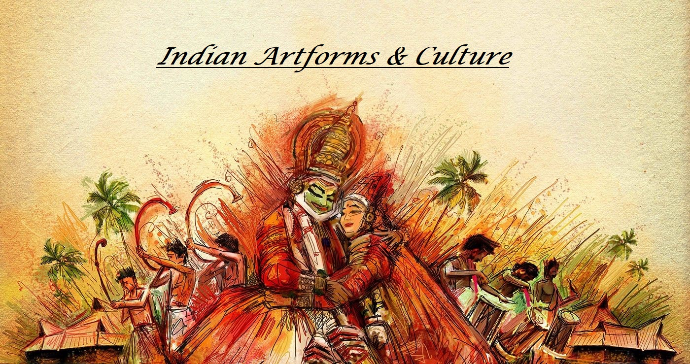
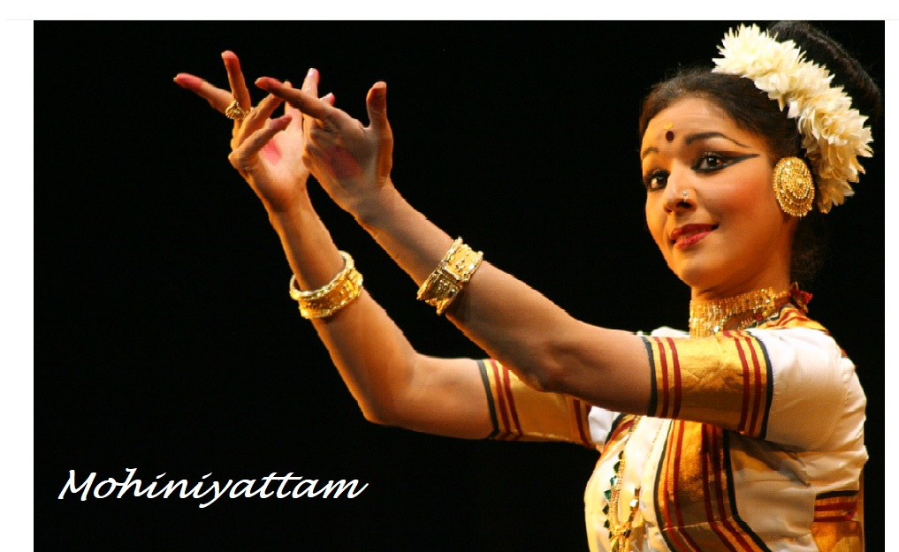
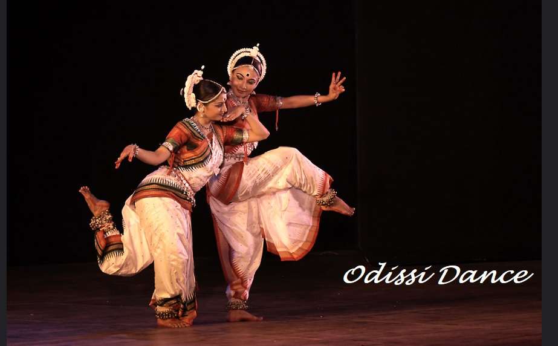

<div id="carouselExampleCaptions" class="carousel slide">
    <div class="carousel-indicators">
      <button type="button" data-bs-target="#carouselExampleCaptions" data-bs-slide-to="0" class="active" aria-current="true" aria-label="Slide 1"></button>
      <button type="button" data-bs-target="#carouselExampleCaptions" data-bs-slide-to="1" aria-label="Slide 2"></button>
      <button type="button" data-bs-target="#carouselExampleCaptions" data-bs-slide-to="2" aria-label="Slide 3"></button>
    </div>
    <div class="carousel-inner" style="color:aquamarine;">
      <div class="carousel-item active">
        
        <div class="carousel-caption d-none d-md-block">
         <!-- <h2 class="text-body-emphasis"><i><b>Indian Artforms<b></i>></h>
          <p class="text-body-emphasis">
           -->
          <!-- <b>Indian art and culture is one of the most fascinating cultures to study. It is a place where stories are told through art, dance, music, food, and customs. To understand the rich history of India, you should start by subscribing to stories that are told in folk art.</b> -->
        </div>
   
   
    </div>
   
  
      <div class="carousel-item">
        
        <div class="carousel-caption d-none d-md-block">
          <!-- <h5>Second slide label</h5>
          <p>Some representative placeholder content for the second slide.</p> -->
        </div>
      </div>
      <div class="carousel-item">
        
        <div class="carousel-caption d-none d-md-block">
          <!-- <h5>Third slide label</h5>
          <p>Some representative placeholder content for the third slide.</p> -->
        </div>
      </div>
    </div>
    <button class="carousel-control-prev" type="button" data-bs-target="#carouselExampleCaptions" data-bs-slide="prev">
      <span class="carousel-control-prev-icon" aria-hidden="true"></span>
      <span class="visually-hidden">Previous</span>
    </button>
    <button class="carousel-control-next" type="button" data-bs-target="#carouselExampleCaptions" data-bs-slide="next">
      <span class="carousel-control-next-icon" aria-hidden="true"></span>
      <span class="visually-hidden">Next</span>
    </button>
  </div>